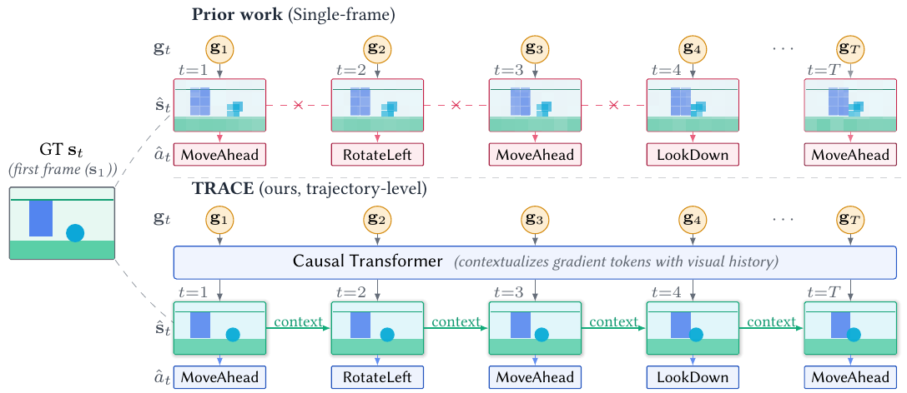
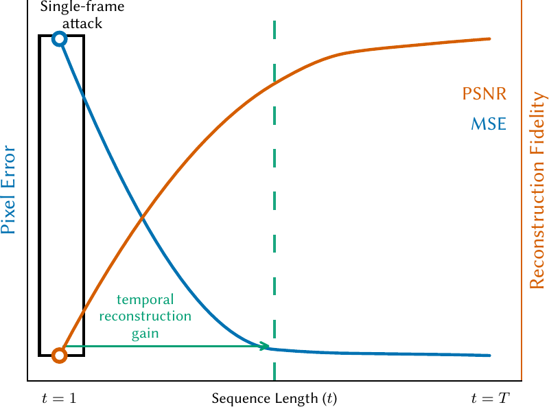
Distributed learning in embodied reinforcement-learning agents offers a degree of privacy by retaining raw sensor data on-device and transmitting only policy gradients to the server. Yet temporal structure can amplify this leakage beyond single-frame attacks. We introduce Temporal Reconstruction Attack on Consecutive Encodings (TRACE), an amortized temporal gradient-inversion attack that autoregressively reconstructs the sequence of private observation-action trajectories from per-step policy-learning gradients.
The attack exploits two structural signals ignored by prior single-frame methods: (i) cross-time correlation between successive embodied gradients, which we formalize via a conditional mutual-information bound, and (ii) closed-form action recovery from policy-head gradient structure, which we prove exact when standard entropy regularization is sufficiently small. On held-out embodied scenes, TRACE reaches 18.8 dB PSNR with near-perfect action recovery at 3–4.5 ms per reconstructed frame, dominating the learning-based baseline across all reconstruction metrics and exceeding optimization attacks while running orders of magnitude faster.
Further evaluation demonstrates TRACE's broader applicability across recurrent, residual, and compact transformer victim architectures, multi-modal inputs, and larger discrete action spaces. Defense experiments suggest that protecting temporal gradient streams may require sequence-aware privacy mechanisms.
One gradient in, one frame and one action out
A trained inverter reads the gradient stream step by step. No per-sample optimization, so attacking a new trajectory is a single forward pass.
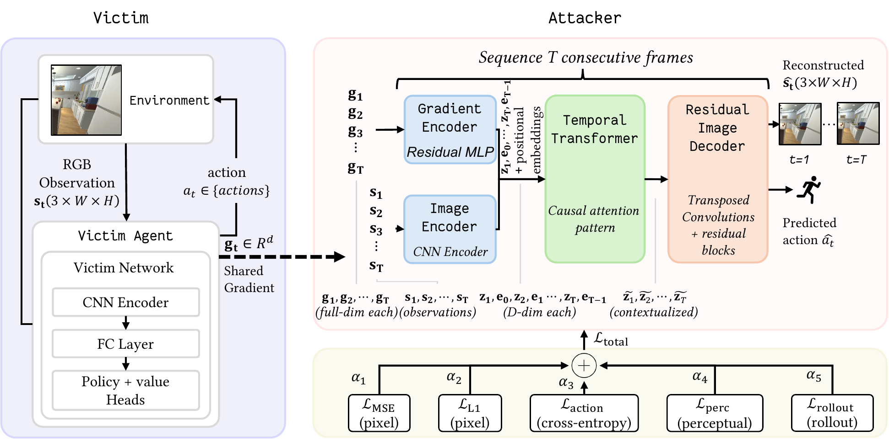
Cross-time correlation
Successive embodied gradients share information about the scene. We bound what the past adds about the present with a conditional mutual-information argument.
Closed-form action recovery
The policy-head gradient gives the action away directly. Recovery is provably exact when entropy regularization is small enough.
Autoregressive, exposure-aware
The inverter conditions on its own previous reconstructions, trained so that errors do not compound over long rollouts.
What the agent saw, recovered from its gradients
Point-goal navigation in AI2-THOR. The victim sees 84×84 RGB frames and picks one of five actions; the attacker only sees per-step policy gradients.
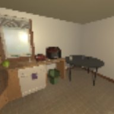
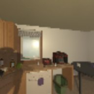
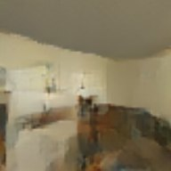
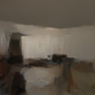
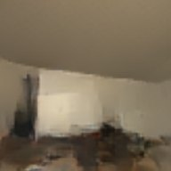
| Method | MSE ↓ | PSNR ↑ | SSIM ↑ | LPIPS ↓ | Act. Acc. ↑ | Time / frame |
|---|---|---|---|---|---|---|
| DLG | 0.289 | 5.47 | 0.043 | 1.224 | 16.6% | 31.0 s |
| Inverting Gradients | 0.161 | 8.73 | 0.166 | 0.766 | 31.5% | 39.3 s |
| Learning to Invert | 0.023 | 16.79 | 0.529 | 0.671 | 100% | 1.2 ms |
| TRACE | 0.014 | 18.77 | 0.627 | 0.362 | 100% | 4.5 ms |
| DLG | 0.259 | 6.11 | 0.036 | 1.184 | 51.0% | 76.1 s |
| Inverting Gradients | 0.114 | 9.51 | 0.093 | 0.686 | 32.5% | 39.6 s |
| Learning to Invert | 0.018 | 17.65 | 0.508 | 0.639 | 100% | 0.2 ms |
| TRACE | 0.014 | 18.87 | 0.583 | 0.358 | 100% | 3.0 ms |
Baselines are adapted from supervised classification with an actor-critic surrogate loss. PSNR in dB. Means over held-out sequences; standard deviations are in the paper.
Not tied to one victim network
Each PPO victim gets its own separately trained attacker, with no data augmentation. K is the number of actions.
| Victim | K | MSE ↓ | PSNR ↑ | SSIM ↑ | LPIPS ↓ | Act. Acc. ↑ |
|---|---|---|---|---|---|---|
| CNN | 10 | 0.013 | 18.92 | 0.610 | 0.372 | 99.5% |
| Tiny ViT | 5 | 0.048 | 13.99 | 0.456 | 0.543 | 99.0% |
| IMPALA-style CNN | 5 | 0.007 | 21.85 | 0.725 | 0.244 | 97.4% |
| Wider IMPALA CNN | 5 | 0.007 | 22.36 | 0.773 | 0.208 | 98.5% |
| CNN + GRU | 5 | 0.015 | 18.62 | 0.565 | 0.390 | 97.5% |
| Multi-modal CNN | 5 | 0.011 | 19.78 | 0.697 | 0.335 | 97.4% |
More capacity does not protect the victim: the wider IMPALA network gives the best reconstructions. Action recovery stays above 97% across every architecture.
Per-step defenses barely slow it down
Pruning and light noise leave the reconstruction almost untouched. Only aggressive quantization, strong noise and DP-SGD break it.
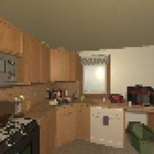
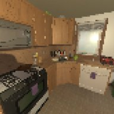
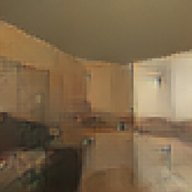
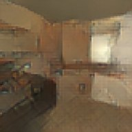
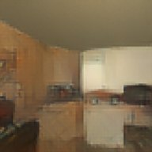
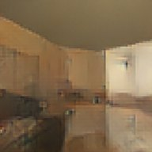
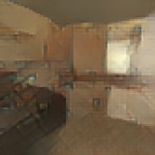
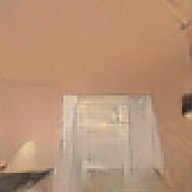
| Defense | Setting | MSE ↓ | PSNR ↑ | SSIM ↑ | LPIPS ↓ | Act. Acc. ↑ |
|---|---|---|---|---|---|---|
| No defense | — | 0.018 | 18.9 | 0.628 | 0.374 | 99.9% |
| Quantization | ||||||
| 8-bit | 0.020 | 18.5 | 0.619 | 0.384 | 99.9% | |
| 4-bit | 0.075 | 12.4 | 0.422 | 0.645 | 37.9% | |
| 2-bit | 0.091 | 11.3 | 0.380 | 0.689 | 19.4% | |
| Pruning (keep %) | ||||||
| 90% | 0.018 | 18.9 | 0.628 | 0.374 | 99.9% | |
| 50% | 0.018 | 18.9 | 0.628 | 0.374 | 99.9% | |
| 10% | 0.018 | 18.8 | 0.624 | 0.371 | 99.9% | |
| Gaussian noise (σ) | ||||||
| 0.001 | 0.018 | 18.8 | 0.626 | 0.376 | 99.8% | |
| 0.01 | 0.023 | 18.1 | 0.599 | 0.401 | 94.9% | |
| 0.1 | 0.049 | 14.2 | 0.438 | 0.572 | 59.9% | |
| DP-SGD (ε, δ = 10⁻⁵) | ||||||
| ε = 10 | 0.069 | 12.2 | 0.345 | 0.658 | 21.4% | |
| ε = 5 | 0.069 | 12.1 | 0.342 | 0.663 | 21.4% | |
| ε = 1 | 0.071 | 12.0 | 0.346 | 0.658 | 17.6% | |
| No defense | — | 0.015 | 18.4 | 0.530 | 0.373 | 99.1% |
| Quantization | ||||||
| 8-bit | 0.016 | 18.4 | 0.529 | 0.374 | 98.3% | |
| 4-bit | 0.057 | 13.3 | 0.428 | 0.556 | 50.2% | |
| 2-bit | 0.078 | 11.5 | 0.404 | 0.653 | 41.4% | |
| Pruning (keep %) | ||||||
| 90% | 0.015 | 18.4 | 0.530 | 0.373 | 99.1% | |
| 50% | 0.015 | 18.4 | 0.530 | 0.373 | 99.1% | |
| 10% | 0.017 | 18.0 | 0.517 | 0.383 | 89.0% | |
| Gaussian noise (σ) | ||||||
| 0.001 | 0.015 | 18.4 | 0.530 | 0.373 | 98.8% | |
| 0.01 | 0.016 | 18.3 | 0.525 | 0.377 | 96.2% | |
| 0.1 | 0.026 | 16.5 | 0.452 | 0.440 | 64.1% | |
| DP-SGD (ε, δ = 10⁻⁵) | ||||||
| ε = 10 | 0.050 | 13.3 | 0.322 | 0.563 | 27.4% | |
| ε = 5 | 0.050 | 13.2 | 0.319 | 0.559 | 23.7% | |
| ε = 1 | 0.049 | 13.3 | 0.322 | 0.562 | 24.5% | |
Highlighted cells mark settings where the attack clearly degrades. Protecting a gradient stream likely needs sequence-aware privacy mechanisms rather than per-step perturbation.
BibTeX
@inproceedings{bhujel2026trace,
title = {Temporal Gradient Inversion for Private Trajectory Reconstruction in Embodied Reinforcement Learning},
author = {Bhujel, Sudip and Shi, Shanghao and Huang, Ruiquan and Zhang, Ning and Xiao, Yang},
booktitle = {Advances in Neural Information Processing Systems (NeurIPS)},
year = {2026},
eprint = {2609.30258},
archivePrefix = {arXiv},
primaryClass = {cs.LG},
url = {https://trace-gia.github.io/}
}